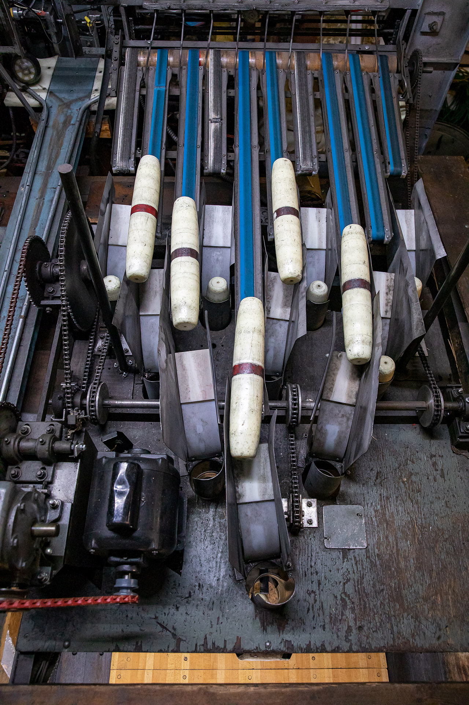

Candlepins load into a pinsetter at Leo's Metro Bowl in Peabody, Mass.
PEABODY, Mass. -- The world may seem upside down, but candlepins work in either direction.
That at least seems to be the attitude at Leo's Metro Bowl & Spare Time Tavern in Peabody, Mass., where -- despite a loss of revenue from building capacity restrictions -- the alley has managed to stay busy since it reopened from a statewide COVID-19 business closure of non-essential businesses during Phase 3 of Massachusetts’ reopening plan.
Many other alleys across New England have struggled to get up and running again, but they, along with leagues and fans throughout New England, are now doing as much as they can to keep the quirky, region-specific sport alive. While the circumstances at the moment are challenging for any public-facing business, the owners and dedicated staff at Leo’s have worked dilligently to preserve candlepin bowling's future on Massachusetts' North Shore.
Employees Jim Barber, left, and Joe Tavernese, right, chat for a moment on a somewhat busy Thursday night. When working together, Jim manages the equipment and Joe mans the register. (Click on photos to view them in full resolution.)
Joe, Jim and many other staff members have played the game competitively over the years and work at Leo's now out of love for the sport.
Joe manages the alley’s earnings toward the end of a night.
Joe Tavernese, Jim Barber and many of the other staff members at Leo’s have a long history with candlepin bowling where they now work and at many alleys that used to operate in surrounding communities like Lynn. Back in the day, when candlepin bowling attracted interest as a spectator sport, Joe, Jim and some of the others were sometimes featured on TV shows like Candlepins for Cash and Candlepin Doubles.
Leo’s has been astutely following state and federal guidance on safely reopening, but those who work at the alley are not immune to the impression that individuals across New England and the rest of the country could be doing more prevent the spread of the virus.
Staff members sanitize balls and lanes every time a group of bowlers leave. Every other lane has been shut down, but customers must wear face masks at all times and practice social distancing to the best of their ability, especially from other groups.
This is a sample quote.
Jim Barber
Although Jim shares the frustrations of many workers about the restriction of economic activity during the COVID-19 pandemic, he feels that the virus would be much less of a threat to public health and small businesses like Leo’s could recover quicker if more people across the United States followed social distancing guidelines and wore masks as scientists and experts advise.
Leo's Metro Bowl attracts a crowd on a Thursday night in the middle of a global pandemic.

Bowling shoes greet customers as they walk into Leo's Metro Bowl.
Owner Bob Leo Sr., center, is pictured at in an undated photo with his brothers at Metro Bowl.
Bob Leo Sr. opened Leo’s Metro Bowl in 1977 with his two brothers after shutting down an alley he had owned in Lynn since 1947. The display behind the bar of the alley's Spare Time Tavern, run by his son Bob Leo Jr., features a timeline of pins used at the alley — which has not always only had candlepin lanes.
Bob Leo Jr. says part of the business’s success throughout the years has been a willingness to adapt to the times and to expand when necessary. When other forms of bowling gained popularity in the area, the alley followed suit. When other alleys on the North Shore began to close, it also attracted local leagues.
Most recently, the alley built the bar and kitchen as an additional revenue source in 2017 and installed party rooms, an arcade and billiards tables. The tavern has had a large role in helping Leo’s stay afloat through the COVID-19 pandemic.
A sign at Leo’s reassures customers that they are in a clean environment during the COVID-19 pandemic.
Jim sanitizes balls and lanes every time a customer leaves.
The pinsetter machines at Leo’s, made in the 1940s, are the original machines used when the alley opened. The staff repairs all of the equipment themselves.
The alley features 38 lanes, but half of them are shut down because of the pandemic. The restrictions didn’t stop people from enjoying one of their favorite New England family pastimes when the alley reopened, and leagues started to play again in October. What's more, many of the staff members know their customers well because they have been coming to bowl for years, even decades.
The Elks League, a mix of men and women of all ages, has been meeting at Leo’s and other nearby alleys alongside many other leagues for about 40 years. While it was more competitive in candlepin’s heyday during the 70s and 80s, new and old members still meet every Thursday out of pure love and appreciation for the game.
This is a sample quote.
Joe Tavernese
Candlepin bowling is often considered much more difficult than other forms of bowling, like tenpin. Balls are smaller, lighter and have no holes for fingers so they can be more difficult to control. Pins are spaced out farther from each other, and their cylindrical form can be tougher to knock down than curved pins.
Elks League bowler Tom picks a ball while competing while playing at Leo’s.
Tom takes his turn while competing with friends.
Elks League bowler Bill, 90, celebrates with his competitors after getting a strike during a game of candlepin bowling.